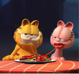

ARLENE
Uma gata rosa e namorada de Garfield. Aparece esporadicamente, já que Garfield é visto muito paquerando outras gatas.
Em Garfield: Fora de casa, o amado gato de estimação laranja (dublado por Chris Pratt) Está de volta para mais uma aventura inesquecível: após reencontrar seu pai, o gato de rua Vic (dublado por Samuel L. Jackson) que não via há muito tempo, Garfield e o cãozinho Odie acabam se envolvendo em um arriscado assalto.

Uma gata rosa e namorada de Garfield. Aparece esporadicamente, já que Garfield é visto muito paquerando outras gatas.